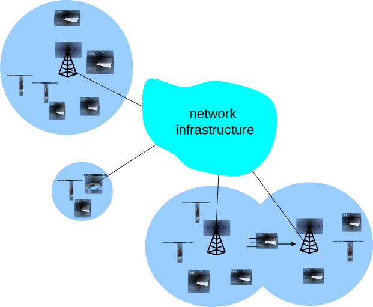
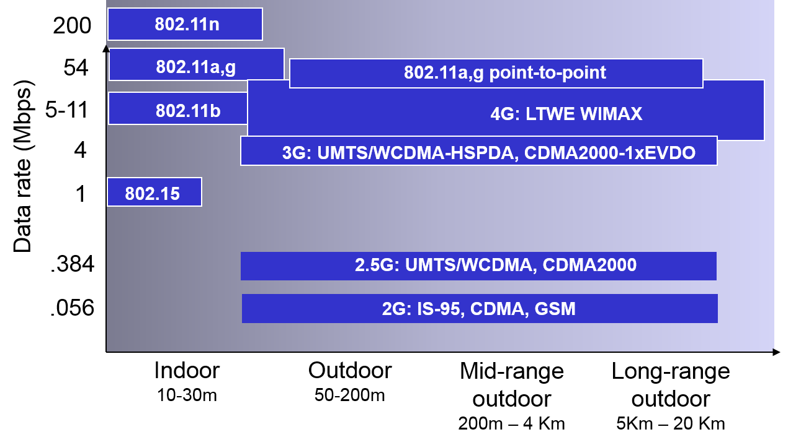
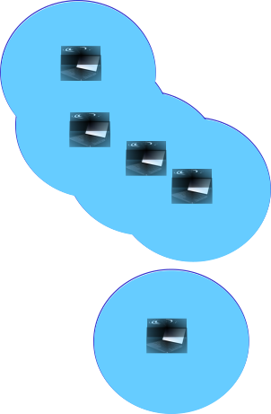
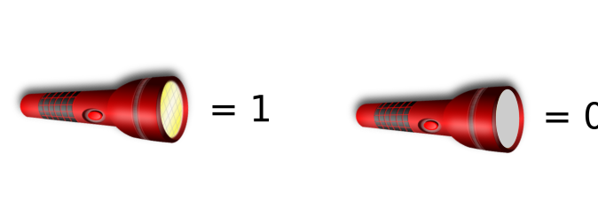
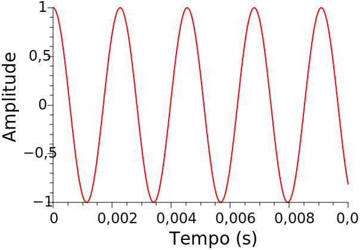
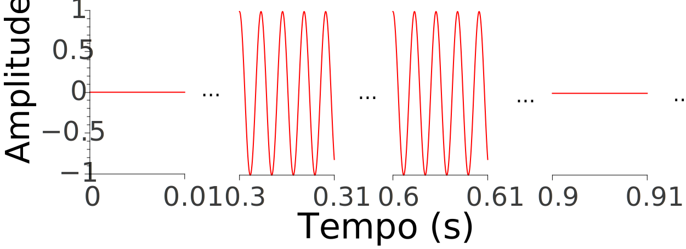
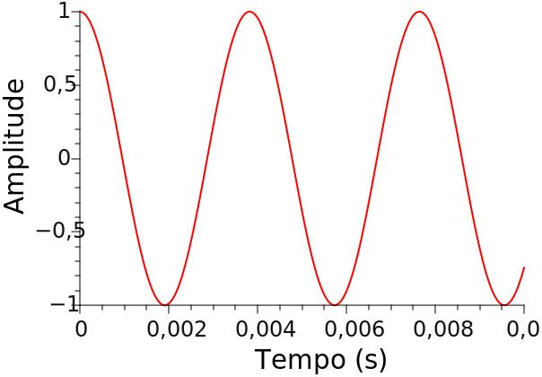
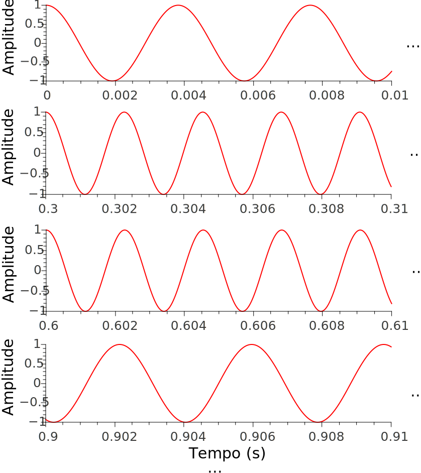

Aula 9 - Redes Sem Fio: Conceitos e Camada Física
Diego Passos
Universidade Federal Fluminense
Redes de Computadores II
Na Última Aula...
Vimos um exemplo de rede nível 2 complexa:
Data Center
.
Alto grau de interconectividade.
Cria
loops
físicos
propositais
.
Objetivo:
múltiplos caminhos, redundância, confiabilidade
.
Vimos um exemplo do funcionamento (quase) completo da pilha TCP/IP.
Envolvendo HTTP, TCP, IP, ARP, UDP, DHCP, ...
Capítulo 6: Motivação, Contexto e Objetivos
Número de linhas de celular já é maior que o de linhas de telefones fixos (6 para 1 no Brasil!).
Número de dispositivos sem fio conectados à Internet é equivalente ao de dispositivos cabeados.
Laptops, tablets, celulares prometem conectividade ubíqua à Internet.
Dois desafios importantes (embora diferentes):
redes sem fio:
comunicação através de enlaces sem fio.
mobilidade:
suporte a usuários que mudam seu ponto de conexão com a rede.
Agenda
Introdução.
Redes Sem Fio
.
Características dos enlaces sem fio.
CDMA.
Redes locais IEEE 802.11 (“Wi-Fi”).
Acesso à Internet via Rede Celular.
Arquiteturas.
Padrões (
e.g.
, GSM).
Mobilidade
Princípios: Endereçamento e Roteamento para Usuários Móveis.
IP Móvel.
Suporte à Mobilidade em Redes Celular.
Mobilidade e Protocolos de Camadas Superiores.
Sumário.
Introdução
Elementos de uma Rede Sem Fio (I)

Elementos de uma Rede Sem Fio (II)
Hosts sem fio.
Laptops, smartphones.
Rodam aplicações.
Podem ser estacionários (não-móveis) ou móveis.
Sem fio
não
é sinônimo de mobilidade!
Elementos de uma Rede Sem Fio (III)
Estação base.
Tipicamente conectadas a redes cabeadas.
Relay
— responsável por enviar pacotes entre rede cabeada e hosts sem fio na sua “área”.
e.g.
, torres de celular, pontos de acesso 802.11.
Elementos de uma Rede Sem Fio (IV)
Enlace sem fio.
Tipicamente, conectam hosts sem fio à estação base.
Também podem ser usadas como enlaces do
backbone
.
Protocolo de acesso múltiplo coordena uso do enlace.
Distâncias variadas, múltiplas taxas de transmissão.
Características de Enlaces em Algumas Tecnologias Sem Fio

Rede Infraestruturada
vs.
Sem Infraestrutura (I)
Rede Infraestruturada:
Estação base interconecta hosts sem fio à rede cabeada.
Handoff:
cliente muda de estação base.
Rede Infraestruturada
vs.
Sem Infraestrutura (II)

Rede Sem Infraestrutura:
Sem estações base.
Nós podem transmitir diretamente para outros nós dentro da sua área de cobertura.
Nós se organizam em uma rede: por exemplo, podem rotear pacotes entre eles.
Muitas vezes chamadas de
ad hoc
.
Taxonomia de Redes Sem Fio
Um Salto
Múltiplos Saltos
Infraestruturada
Host se conecta a estação base (Wi-Fi, WiMax, celular), que se conecta a uma rede maior.
Host pode precisar usar vários
relays
para se conectar a uma rede maior: rede
mesh
(ou malha); WDS, em redes Wi-Fi.
Sem Infraestrutura
Sem estação base, sem conexão a outras redes (Bluetooth, redes ad hoc).
Sem estação base, sem conexão a outras redes. Hosts podem precisar usar vários
relays
para alcançar outros nós: VANETs, MANETs.
Alguns Conceitos de Camada Física
Alguns Conceitos de Camada Física: Objetivos
Camada física
não
é um dos focos da nossa disciplina.
Não
veremos detalhes técnicos sobre o funcionamento desta camada.
Mas...
Discutiremos de forma bastante breve como transmissões ocorrem/podem ocorrer.
Veremos alguns exemplos simplificados.
Objetivo: estabelecer de forma
intuitiva
alguns conceitos/propriedades da camada física.
(Breve) Introdução à Camada Física: Conceitos e Exemplo
Camada física
:
Define como a informação é representada em um canal de comunicação.
Transmissor
:
Manipula características do meio físico de transmissão.
e.g.
, potencial elétrico, amplitude de uma onda acústica.
Receptor
:
Observa as características e suas variações.
Exemplo simples: comunicação através de lanternas.
Duas pessoas a certa distância.
Muito longe para se ouvirem.
Mas possuem lanternas.
Cada um é capaz de ver o brilho da lanterna do outro.
Pode-se arbitrar um código:

(Breve) Introdução à Camada Física: Mensagens Complexas
Ainda usando o exemplo das lanternas
:
Transmitir bits individuais é simples.
Mas como transmitir mensagens complexas (mais de 1 bit)?
Simples:
Como sequência de bits.
A cada novo bit, alteramos o
estado
da lanterna.
E quanto a bits iguais em sucessão?
Arbitramos uma
duração
para cada bit.
Tempo em que a lanterna é mantida em um estado para representar bit.
Exemplo (duração de 1 segundo): lanterna acessa por 6 segundos ⇒ 6 bits 1.
Transmissão de caractere ASCII.
Entrada
ASCII
Tempo =
0
ms
(Breve) Introdução à Camada Física: Trocando Lanternas por Circuitos
Suponha agora que as duas pessoas não tenham mais lanternas.
Ao invés disso, cada uma tem acesso a potas de um par de fios de cobre.
Transmissor tem ainda uma bateria e uma chave.
Receptor tem um voltímetro.
Transmissor pode abrir e fechar o circuito.
Dependendo do estado da chave, a leitura do voltímetro muda.
0 ou tensão da bateria (aproximadamente).
(Breve) Introdução à Camada Física: Sinal no Tempo
Suponha que o transmissor envie o caractere
'a'
.
ASCII:
01100001
.
Receptor monitora continuamente a tensão:
(Breve) Introdução à Camada Física: Ondas Acústicas (I)
Agora suponha que queremos transmitir dados através de sons.
Para isso, usamos um piano.
Como podemos codificar os dados?
Elegemos uma nota: por exemplo, um Lá central.
Tocamos por 1 segundo para representar o bit 1.
Um segundo
sem som
representa 0.
Vibração da Corda (440 Hz)

Codificação do caractere 'a'

(Breve) Introdução à Camada Física: Ondas Acústicas (II)
Outra possibilidade: elegemos duas notas,
e.g:
Lá representa bit 1.
Dó representa bit 0.
Lá (440 Hz)
Dó (261,6 Hz)

Codificação do caractere 'a'

(Breve) Introdução à Camada Física: Taxa de Transmissão (I)
Como podemos aumentar a
taxa de transmissão
?
i.e.
, reduzir o tempo para transmitir mesma quantidade de informação.
Alguns caminhos: por exemplo, reduzir a duração do símbolo.
Com 300 ms, taxa de
\(\frac{1}{0{,}3} \approx 3{,}4\)
b/s.
Com 150 ms, dobramos a taxa.
Com 75 ms, quadruplicamos a taxa.
Mas há um custo:
À medida que reduzimos a duração do símbolo, aumentamos a dificuldade em “entender” a transmissão.
Exemplo para 150 ms
Exemplo para 75 ms
(Breve) Introdução à Camada Física: Taxa de Transmissão (II)
Caminho alternativo:
Usar mais “notas”,
e.g
:
Dó (261,6 Hz) ⇒ 00.
Ré# (311,1 Hz) ⇒ 01.
Fá# (370 Hz) ⇒ 10.
Lá (440 Hz) ⇒ 11.
Resultado
Dobramos o número de frequências usadas, dobramos a taxa de transmissão.
Podemos continuar este processo, aumentando ainda mais a taxa.
Mas, novamente, há um custo:
Quanto mais próximas duas frequências, mais difícil é diferenciá-las.
Resumo da Aula (I)...
Conceitos básicos de redes sem fio:
Hosts sem fio
não são necessariamente móveis
.
Em geral,
mobilidade ≠ sem fio
.
Estação base
: interconecta clientes sem fio em sua
área de cobertura
.
Também conecta estes clientes a uma
infraestrutura cabeada
.
Enlaces sem fio:
Distâncias
variadas.
Taxas
variadas.
Meio de transmissão
tipicamente compartilhado
.
Redes infraestruturadas
vs. ad hoc
.
Com ou sem estação base
.
Resumo da Aula (II)...
Conceitos Básicos de Camada Física:
Define como informação é
representada em canal de comunicação
.
Transmissor: altera algum
parâmetro físico do meio
.
Receptor: monitora o parâmetro,
interpretando seus valores
.
Exemplos de parâmetros:
Luminosidade, tensão elétrica, ondas sonoras, ...
Valores do parâmetro físico são chamados de
símbolos
.
Codificam
um ou mais bits
.
Quanto
mais bits por símbolo, maior a taxa de transmissão, probabilidade de erro
.
Símbolos têm
duração
.
Tempo pelo qual transmissor
mantém parâmetro naquele valor
.
Quanto
menor a duração, maior a taxa de transmissão, probabilidade de erro
.
Leituras e Exercícios Sugeridos
Introdução e conceitos básicos.
Páginas 377 a 380 do Kurose (até Seção 6.1, inclusive).
Exercícios de fixação 1 e 2 do capítulo 6 do Kurose.
Conceitos de camada física.
(Opcional) Para se aprofundar (um pouco), capítulo 2 do Tenenbaum.
Atividade sugerida:
Baixe o código fonte
dos programas usados nas demonstrações e execute-os em casa.
Altere parâmetros e veja o que acontece.
Tente entender os compromissos entre taxa de transmissão e probabilidade de falha.
Próxima Aula...
Continuamos estudando as redes sem fio.
Usaremos os conceitos de camada física vistos nesta aula para entender características dos enlaces sem fio.
Também conheceremos um outro método de acesso múltiplo: o CDMA.
Discutiremos os conceitos de WLAN e WPAN.
E os seus respectivos padrões, o IEEE 802.11 e o IEEE 802.15.